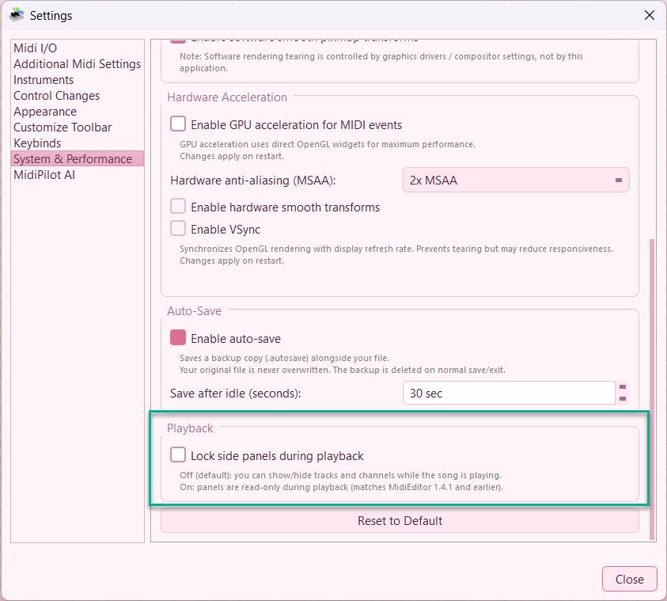

Playback & Recording
MidiEditor allows you to play the song when you have selected an output device.
You can find buttons for the playback in the toolbar: start playback
( ),
pause (
),
pause ( ),
stop (
),
stop ( ),
and record (
),
and record ( ).
Individual tracks and channels can be muted,
the metronome toggled, and MIDI data recorded from an input device.
).
Individual tracks and channels can be muted,
the metronome toggled, and MIDI data recorded from an input device.
Muting Tracks and Channels
Sometimes it makes sense to play only specific channels or tracks in order to listen to one or more instruments at a time. Hence, specific tracks and channels can be muted. If either the track or the channels assigned to a Midi event is muted, the event will be ignored during the playback. Hence, notes of muted tracks and channels will not be audible during the playback.
In order to mute a specific track or a channel, please press  in the according list in the
track editor or the channel editor.
Click again in order to make the channel or track audible again.
in the according list in the
track editor or the channel editor.
Click again in order to make the channel or track audible again.
Moreover, there are actions which allow you to mute or make audible all tracks or channels at once. These buttons
( /
/  )
can be found in the toolbar as well as in the
track editor or the channel editor.
)
can be found in the toolbar as well as in the
track editor or the channel editor.
If you want to play one channel alone, the channel can be marked to be the "solo channel". This will automatically mute all other channels
without having to mute them manually. The solo mode can be entered by clicking  for the according
channel in the channel editor.
for the according
channel in the channel editor.
Setting the Cursor

You can specify the position in the song where the playback starts when pressing the play button. This can be done by double clicking into the time line above the event view.
The toolbar also provides actions to move the cursor to the next or previous measure ( and
and  ), the next or previous marker
(
), the next or previous marker
( and
and
 ), or reset the cursor to start the playback at the beginning of the file
(
), or reset the cursor to start the playback at the beginning of the file
( ).
).
Speed
Sometimes it will be useful to slow down the playback speed (or to speed it up). This can be done by setting the playback speed in the toolbar. Setting the playback speed to 1 (default) will play at normal speed, while setting it to 2 will result in a two times faster playback speed. Playback speeds lower than 1 will slow down the playback.
Smooth Playback Scrolling
By default the event view jumps by a full screen width when the playback cursor reaches the edge. With Smooth Playback Scrolling enabled, the viewport follows the cursor in real time, keeping it roughly centred so you never lose sight of what’s playing.
Smooth scrolling keeps the playback cursor in view at all times.
Toggle the feature in Settings → Appearance or in Settings → Additional Midi Settings. When disabled, the classic page-jump behaviour is used.
Live Side Panels During Playback (new in v1.4.2)
In MidiEditor 1.4.1 and earlier, the Tracks, Channels, Event and Protocol side panels were disabled for the entire duration of playback and recording. As of v1.4.2 they stay fully interactive by default - you can toggle channel or track visibility, browse the protocol log, and inspect events in the Event tab while the song is playing.
{kind=link}

Settings → System & Performance → Playback - opt back into the legacy lock-during-playback behaviour.
If you preferred the old behaviour (e.g. to avoid accidental edits while listening),
open Settings → System & Performance → Playback and tick
“Lock side panels during playback”. The setting is stored under
playback/lock_panels and applies immediately to the next play/record session.
Metronome
The metronome can be enabled or disabled in the toolbar. Enabling the metronome will result in a metronome sound at each beat during the playback.
Locking the Screen
When you play a song and there must not be any delays while playing you
may have to lock the screen by enabling  in the toolbar. This means
that the event view does not follow the cursor while playing, because the
repainting of the window can cause a short delay on slower machines.
in the toolbar. This means
that the event view does not follow the cursor while playing, because the
repainting of the window can cause a short delay on slower machines.
Recording MIDI Data
MidiEditor can record MIDI data from an input device, e.g. a digital piano.
To start a recording, press the record button ( ) in the toolbar.
MidiEditor will start a playback (which will allow you to hear any previously entered events) and listen to the
input device at the same time. Notes and other events played via the input device are
added to the currently loaded MIDI file at the time they were played.
) in the toolbar.
MidiEditor will start a playback (which will allow you to hear any previously entered events) and listen to the
input device at the same time. Notes and other events played via the input device are
added to the currently loaded MIDI file at the time they were played.

After a recording has been finished, click the stop button ( ) in the toolbar.
If any events have been recorded, a dialog will pop up which allows you to specify how to handle the recorded events.
) in the toolbar.
If any events have been recorded, a dialog will pop up which allows you to specify how to handle the recorded events.
You can ignore some event types. All events with that type will not be added to the file, while all other events will be added at the time they have been played. You can also specify the track and the channel of the recorded events in the dialog. Press "Ok" to add the events to the file.
After the events have been added, you may want to edit them - correcting wrong notes or adjusting the timing. The quantization function is especially useful in this context.